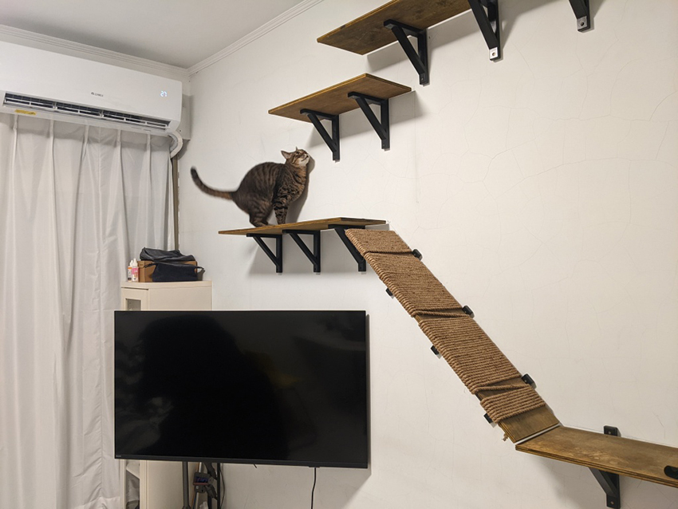
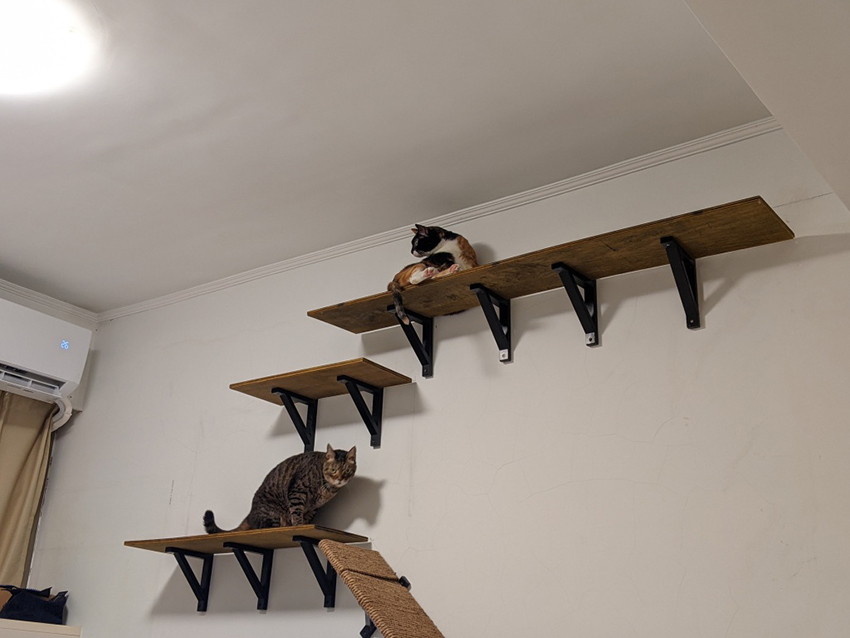
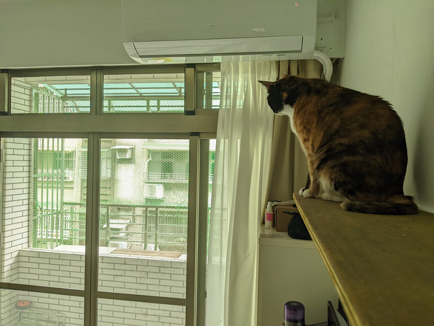

自製貓跳台
張雅婷│先進研究處 \ 市場與消費者研究部
貓咪的天性就是愛爬高，居高臨下、睥睨一切的姿態，看在貓奴的眼裡再萌不過。在徵得家人同意後，我們為毛小孩們裝了四層跳台，方便他們從地板逐層爬到最接近天花板的地方，模擬他們DNA中攀樹躲避危險、觀察獵物的習性。
|  |
| 虎斑貓果然最具有好奇心與冒險犯難精神。 |
跳台裝置好後，第一位試用者果然是最具好奇心與冒險犯難精神的虎斑率先登上頂峰。看著孩子發揮矯健身手，跳上攀爬，覺得從鑽孔、裁切到安裝所耗費的心力都值得了～。
|  |
| 分層的好處就是大家可以各自找一塊喜歡的地方待著。 |
多貓家庭總是要顧及不同孩子的脾氣，不同層的跳台剛好可以讓大家按照自己的喜好，找舒服的位置待著。
|  |
| 能在高處遠眺屋外彷彿也為他們基因中的野性找到一些出口。 |
領養在家中的毛小孩，因為健康、安全乃至於生態考量等因素，其實不太適合放養。圈養環境使他們基因中的野性無處安放，我們只能盡量創造多樣、豐富的條件，稍微彌補孩子們嚮往自由的需求。